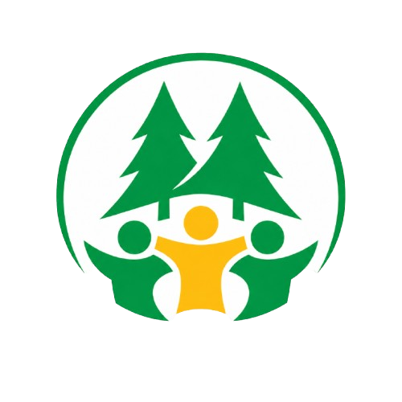

Metodologia de avaliação da Responsabilidade Social Corporativa
Esta metodologia está sendo desenvolvida no âmbito do doutorado em Engenharia de Produção da UTFPR, com o objetivo de avaliar a Responsabilidade Social Corporativa (RSC) em cooperativas de agricultura familiar, contemplando dois eixos principais: documental e prático.
EXEMPLO:
Os cooperados recebem formação sobre os princípios e valores do cooperativismo?
| Classificação | Descrição | Exemplo | Valor |
|---|---|---|---|
| Não Existe | Não há prática. | Ex.: Nunca ofereceu nenhum curso. | 0 |
| Mínima | Prática esporádica. | Ex.: Uma palestra isolada. | 1 |
| Parcial | Prática em algumas áreas. | Ex.: Cursos apenas para diretoria. | 2 |
| Significativa | Prática consolidada na maior parte. | Ex.: Cursos regulares para maioria. | 3 |
| Abrangente | Prática total com monitoramento. | Ex.: Programa com calendário anual. | 4 |
| Plena | Integrada à cultura e inovação. | Ex.: Formação parte do planejamento estratégico. | 5 |
(5 × Im) + 2 14
Interpretação:| Nº | Indicador | Pergunta / Objetivo | Registro Documental | Prática Social | Índice |
|---|---|---|---|---|---|
| 1. Associação Voluntária e Aberta | |||||
| 1 | Portas abertas para quem quer participar | A cooperativa possui políticas claras e acessíveis para adesão de novos membros? Verificar se a cooperativa possui regras claras e justas para entrar e sair, sem discriminação, garantindo que qualquer pessoa da agricultura familiar que queira se associar possa fazê-lo de forma voluntária e com acesso às mesmas condições. | 0.00 | ||
| 2 | Todo(a)s têm vez nos benefícios e na participação | Todos os cooperados têm as mesmas condições de acesso aos recursos e serviços oferecidos pela cooperativa? Verificar se os associados e associadas, independentemente de tempo de cooperativa, tamanho da produção ou local de moradia, conseguem acessar os mesmos serviços (como assistência técnica, insumos, comercialização) e oportunidades (como participar de cursos, conselhos, projetos) oferecidos pela cooperativa. | 0.00 | ||
| 3 | Participação de diferentes perfis, com igualdade | A cooperativa Incentiva a participação de mulheres e de grupos diversos? Verificar se a cooperativa valoriza e incentiva a participação de diferentes perfis (jovens, idosos, pessoas de todos os gêneros, diferentes origens) e especialmente das mulheres, tanto como associadas quanto em funções de representação e decisão, garantindo que ninguém fique de fora por razões de gênero ou condição social. | 0.00 | ||
| 4 | Chegar perto de quem mora longe | A cooperativa desenvolve ações para incluir agricultores de áreas rurais remotas? Verificar se a cooperativa consegue atender e incluir associados que vivem em localidades distantes ou de difícil acesso, seja levando serviços até as comunidades, organizando reuniões descentralizadas ou criando formas de participação que não exijam deslocamentos longos e custosos. | 0.00 | ||
| 2. Controle Democrático dos Membros | |||||
| 1 | Voz e voto para todo(a)s | Os cooperados participam ativamente das assembleias e processos decisórios? Verificar se a cooperativa garante a participação efetiva de todos os associados nas assembleias e nos processos decisórios, respeitando o princípio “um associado, um voto” e assegurando que as decisões importantes sejam discutidas e aprovadas coletivamente, possibilitando a participação nas reuniões por meio de videoconferências. | 0.00 | ||
| 2 | Formato de conversas e Decisões Coletivas | A cooperativa adota regras claras, bem definidas e efetivas para decisões coletivas? Verificar se a cooperativa possui espaços e regras claras que garantam a participação de todos os associados nas decisões, conforme o princípio do controle democrático. | 0.00 | ||
| 3 | Regularidade e qualidade das assembleias | As assembleias são realizadas conforme o estatuto, com registro adequado e efetividade nas deliberações? verificar se as assembleias ocorrem conforme estatuto (ex.: ordinária anual), se há registro de atas, se as decisões são implementadas e se há planejamento estratégico com horizonte superior a um mandato. | 0.00 | ||
| 4 | Formas de Prestação de Contas, Ética e Transparência na Gestão | A gestão da cooperativa presta contas de forma transparente aos membros? Verificar a atuação do conselho fiscal na supervisão das contas, resultados, investimentos e decisões; e se a cooperativa divulga essas informações de forma clara e acessível, com práticas éticas e prestação de contas aos associados. | 0.00 | ||
| 5 | Comunicação que alcança e incentiva a todo(a)s | Existem canais eficazes de comunicação entre a gestão e os cooperados? Verificar se a cooperativa mantém canais de comunicação eficazes (reuniões, informativos, aplicativos, rádio comunitária, etc.) que cheguem a todos os associados, inclusive os mais isolados, e se estimula o engajamento e o retorno de informações. | 0.00 | ||
| 6 | Limites à concentração de Poder e Equilíbrio entre Associados | Há regras e controles claros que evitam a concentração excessiva de poder na cooperativa? Verificar se existem limites claros para a concentração de poder (como mandatos definidos, controle de decisões unilaterais, colegiado de gestão) e se há equilíbrio entre associados, evitando que poucos tomem decisões por todos. Parentes até 2º grau não podem compor a mesma diretoria ou conselho fiscal. | 0.00 | ||
| 7 | Renovação Periódica e Rotatividade da Liderança | Os cargos de liderança são periodicamente renovados na cooperativa? Verificar se há regras para garantir a rotatividade e evitar a perpetuação no poder, aliados a um planejamento de sucessão que garanta transição gradual e não prejudique o desempenho da cooperativa. | 0.00 | ||
| 8 | Liderança que representa a cooperativa | O grupo de direção da cooperativa representa a diversidade de seus membros? Verificar se a composição dos órgãos de gestão (diretoria, conselho fiscal, etc.) reflete a diversidade dos associados em termos de gênero, idade, região de origem, atividade produtiva, garantindo que diferentes perfis sejam representados nas decisões. | 0.00 | ||
| 9 | Satisfação com a Governança Democrática | Os cooperados expressam satisfação com os processos democráticos da cooperativa? Verificar se os associados se sentem ouvidos, respeitados e satisfeitos com o funcionamento democrático da cooperativa, por meio de pesquisas de clima, avaliações de assembleia ou outros instrumentos de escuta. | 0.00 | ||
| 3. Participação Econômica dos Membros | |||||
| 1 | Crédito e recursos produtivos para quem precisa. | Todos os cooperados têm acesso justo a crédito e recursos produtivos? Verificar se a cooperativa oferece acesso equitativo a crédito, insumos, maquinários e outros recursos produtivos, com condições justas e solidárias (juros baixos, prazos adequados), sem privilegiar poucos ou excluir associados de menor renda ou produção. | 0.00 | ||
| 2 | Dinheiro da cooperativa é de todo(a)s e todo(a)s sabem como é usado. | O capital da cooperativa é gerido de forma democrática e transparente? Verificar se o capital da cooperativa é gerido de forma democrática e transparente, com prestação de contas clara sobre aplicações, investimentos e sobras, e se os associados participam das decisões sobre o uso dos recursos. | 0.00 | ||
| 3 | Distribuição e reinvestimento justo das sobras | As sobras são distribuídas e reinvestidas de forma justa entre os cooperados? Analisar se a cooperativa garante distribuição justa das sobras (proporcional à participação de cada associado), cumprir os percentuais legais de 10% para o Fundo de Reserva e 5% para o FATES, e assegurar que a assembleia delibere sobre o restante, priorizando reinvestimentos coletivos quando necessário. | 0.00 | ||
| 4 | Produzir bem e com as contas em dia. | A cooperativa busca eficiência produtiva e sustentabilidade financeira? Verificar se a cooperativa é financeiramente sustentável, ou seja, consegue cobrir seus custos, honrar compromissos, manter reservas e planejar o futuro sem depender excessivamente de recursos externos. | 0.00 | ||
| 5 | Gerar e aumentar a renda do(a)s associado(a)s. | A cooperativa contribui efetivamente para aumentar a renda dos cooperados? Verificar se a atuação da cooperativa (comercialização conjunta, redução de custos, acesso a mercados, agregação de valor) contribui efetivamente para o aumento da renda dos associados e para o fortalecimento econômico de cada família agricultora. | 0.00 | ||
| 6 | Práticas éticas e preços justos de mercado | A cooperativa pratica preços justos e éticos em suas operações comerciais? Verificar se a cooperativa adota práticas comerciais éticas, pagando preços justos pelos produtos dos associados, praticando preços transparentes nas compras coletivas, e combatendo qualquer forma de exploração ou vantagem indevida nas relações internas e com parceiros. | 0.00 | ||
| 4. Autonomia e Independência | |||||
| 1 | Definições de planos e decisões sem interferência externa | A cooperativa toma suas próprias decisões estratégicas sem interferências externas? Verificar se a cooperativa mantém liberdade para definir suas estratégias, planos e prioridades sem sofrer interferência externa (de governos, grandes empresas, financiadores, etc.), respeitando a vontade coletiva dos associados. | 0.00 | ||
| 2 | Fontes próprias de renda e governança sem controle externo | A cooperativa mantém independência financeira e institucional de outras organizações? Verificar se a cooperativa possui fontes próprias de recursos (capital dos associados, fundos internos, receita das atividades) que lhe garantam independência, evitando dependência excessiva de financiamentos ou parcerias que possam comprometer sua autonomia. | 0.00 | ||
| 3 | Controle democrático em parcerias externas | As parcerias externas são estabelecidas mantendo o controle democrático? Verificar se, ao firmar parcerias com outras organizações (empresas, governo, ONGs), a cooperativa mantém o controle democrático sobre as decisões e não aceita condições externas que firam seus princípios ou a soberania dos associados. | 0.00 | ||
| 4 | Cooperados participam da gestão e as decisões seguem princípios do cooperativismo | A cooperativa pratica a autogestão e preserva sua identidade cooperativa? Verificar se a cooperativa pratica a autogestão, ou seja, são os próprios associados (e suas lideranças eleitas) que administram a cooperativa, sem que terceiros assumam o controle ou imponham modelos externos. | 0.00 | ||
| 5 | Mantém foco na missão social mesmo sob pressões externas | A cooperativa resiste a pressões externas que comprometem sua missão social? Verificar se a cooperativa preserva seus valores e princípios cooperativistas mesmo diante de pressões (políticas, econômicas, de mercado) e se defende ativamente sua missão social, priorizando o bem-estar dos associados e da comunidade sobre interesses alheios. | 0.00 | ||
| 5. Educação, Treinamento e Informação | |||||
| 1 | Aprendizado técnico, gerencial e contínuo | A cooperativa oferece ou incentiva a realização de cursos de capacitação técnica ou gerencial continuadamente aos seus membros? Verificar se a cooperativa oferece treinamentos que ajudam os associados a melhorar a produção, a gestão da propriedade e a participação na cooperativa. | 0.00 | ||
| 2 | Aprendizado sobre cooperativismo e seus princípios | Os cooperados recebem formação sobre os princípios e valores do cooperativismo? Verificar se a cooperativa promove educação cooperativista, explicando os princípios, direitos e deveres, a história do cooperativismo e a importância da participação democrática. | 0.00 | ||
| 3 | Destinação dos 5% das sobras ao FATES | A cooperativa contribui ao FATES? Verificar se a cooperativa destina pelo menos 5% das sobras líquidas para o Fundo de Assistência Técnica, Educacional e Social - FATES, e se esse recurso é aplicado de forma transparente em ações concretas de assistência técnica, educação (formal ou cooperativista), saúde, lazer, apoio social aos associados, seus familiares e, quando previsto, aos empregados. | 0.00 | ||
| 4 | Educação em agroecologia e práticas sustentáveis | A cooperativa oferece ou incentiva a realização de cursos em agroecologia e práticas sustentáveis? Verificar se a cooperativa oferece capacitação em agroecologia, manejo sustentável do solo, água, florestas, redução de agrotóxicos e práticas que respeitem o meio ambiente. | 0.00 | ||
| 5 | Educação financeira e ambiental | São oferecidos programas de educação financeira e ambiental aos cooperados? Verificar se a cooperativa promove educação financeira (planejamento e controle de gastos) e ambiental (uso consciente de recursos naturais) para os associados e suas famílias. | 0.00 | ||
| 6 | Acesso e uso de ferramentas digitais pelos associados | A cooperativa promove programas de inclusão digital para seus membros? Verificar se a cooperativa está apoiando os associados a terem acesso e a saberem usar ferramentas digitais básicas para a comunicação, gestão da produção e participação nas decisões, considerando as condições concretas da agricultura familiar. | 0.00 | ||
| 7 | Transferência de conhecimento e inovação tecnológica | A cooperativa promove a transferência de conhecimento e inovação tecnológica? Verificar se a cooperativa estimula a transferência de conhecimento entre associados e parceiros tecnológicos (visitas de campo, dias de campo, grupos de aprendizagem e desenvolvimento de tecnologias) e a adoção de inovações tecnológicas apropriadas à agricultura familiar. | 0.00 | ||
| 8 | Programas de formação em responsabilidade social | Existem programas específicos sobre responsabilidade social cooperativa? Verificar se a cooperativa oferece programas de formação que abordam a responsabilidade social, direitos humanos, equidade de gênero, inclusão e desenvolvimento territorial. | 0.00 | ||
| 9 | Produção de materiais educativos e programas para jovens | A cooperativa produz materiais educativos e programas direcionados a jovens? Verificar se a cooperativa produz materiais educativos acessíveis, e se desenvolve programas específicos para atrair e formar jovens agricultores(as), garantindo a sucessão familiar e a renovação da cooperativa. | 0.00 | ||
| 6. Intercooperação | |||||
| 1 | Participação em redes e alianças intercooperativas | A cooperativa participa ativamente de redes e alianças com outras cooperativas? Verificar se a cooperativa participa de redes, federações, centrais ou alianças com outras cooperativas (da agricultura familiar, crédito, consumo, etc.) para fortalecer a atuação coletiva e trocar experiências. | 0.00 | ||
| 2 | Compartilhamento de recursos e infraestrutura | Há práticas de compartilhamento de recursos e infraestrutura com outras cooperativas? Verificar se a cooperativa compartilha ativamente recursos (como máquinas, equipamentos, veículos, instalações, sistemas de logística ou armazenagem) e infraestrutura com outras cooperativas ou entidades parceiras, visando redução de custos, ganho de escala e maior eficiência da cooperativa. | 0.00 | ||
| 3 | Projetos colaborativos e parcerias para pesquisa e desenvolvimento | A cooperativa desenvolve projetos colaborativos de pesquisa e desenvolvimento? Verificar se a cooperativa desenvolve projetos de pesquisa, inovação ou extensão em parceria com outras cooperativas, universidades ou centros de pesquisa, buscando soluções conjuntas. | 0.00 | ||
| 4 | Comercialização e logística solidária | Existem iniciativas de comercialização e logística solidária entre cooperativas? Verificar se a cooperativa adota práticas de comercialização solidária (venda conjunta, compra coletiva de insumos) e logística compartilhada (transporte, entrega) com outras cooperativas, ampliando mercados e reduzindo custos logísticos. | 0.00 | ||
| 5 | Fortalecimento do movimento cooperativo e integração em cadeias sustentáveis | A cooperativa contribui para o fortalecimento do movimento cooperativo? Verificar se a cooperativa atua para fortalecer o cooperativismo como movimento (participando de eventos, fóruns, campanhas) e se integra a cadeias produtivas sustentáveis (produção, processamento, comercialização) em parceria com outras cooperativas, respeitando os princípios ambientais e sociais. | 0.00 | ||
| 7. Interesse pela Comunidade | |||||
| 1 | Desenvolvimento comunitário (social, econômico e territorial) | A cooperativa contribui para o desenvolvimento da comunidade? Verificar se a cooperativa promove ações que contribuem para o desenvolvimento social, econômico e territorial da comunidade (geração de emprego, renda, infraestrutura, serviços, valorização da cultura local). | 0.00 | ||
| 2 | Atração e permanência dos jovens no campo | A cooperativa possui práticas de incentivos para a permanência dos jovem no campo? verificar se a cooperativa possui programas de formação para jovens agricultores, incentivos à sucessão familiar, acesso a terra, crédito jovem, ou parcerias com escolas técnicas. | 0.00 | ||
| 3 | Gestão socioambiental e sustentabilidade | A cooperativa adota práticas de gestão socioambiental sustentável? Verificar se a cooperativa adota práticas de gestão socioambiental (destino correto de resíduos, proteção de nascentes, recuperação de áreas degradadas, redução de agrotóxicos) e promove a sustentabilidade nas propriedades e na região. | 0.00 | ||
| 4 | Promoção da agricultura familiar | A cooperativa promove ativamente a agricultura familiar na região? Verificar se a cooperativa atua para promover e defender a agricultura familiar como modelo produtivo, apoiando políticas públicas, feiras, certificações, e fortalecendo o reconhecimento social do agricultor familiar. | 0.00 | ||
| 5 | Prática do comércio justo | A cooperativa pratica e promove os princípios do comércio justo? Verificar se a cooperativa adota práticas de comércio justo (preço justo ao produtor, transparência nas relações, respeito ao trabalho, proibição de exploração) e busca certificações ou parcerias que valorizem essa abordagem. | 0.00 | ||
| 6 | Segurança alimentar e nutricional | A cooperativa contribui para a segurança alimentar e nutricional da comunidade? Verificar se a cooperativa contribui para a segurança alimentar e com a nutrição da comunidade, fornecendo alimentos saudáveis, apoiando a merenda escolar, doando excedentes, ou desenvolvendo programas contra a fome. | 0.00 | ||
| 7 | Responsabilidade social e territorial | A cooperativa assume responsabilidade social e territorial em suas ações? Verificar se a cooperativa assume a responsabilidade social e territorial como parte de sua identidade, apoiando iniciativas comunitárias no entorno da cooperativa (saúde, educação, lazer, infraestrutura local) e participando ativamente do planejamento e desenvolvimento do território. | 0.00 | ||
| 8 | Condições de trabalho dignas e de bem-estar | A cooperativa garante condições de trabalho dignas e de bem-estar aos seus membros? Verificar se a cooperativa garante condições de trabalho dignas (remuneração justa, segurança, jornada adequada, respeito às leis trabalhistas) tanto para os associados quanto para funcionários, e se promove ações de bem-estar (saúde, lazer, qualidade de vida). | 0.00 | ||
| 9 | Respeito às diferenças e combate à discriminação | A cooperativa promove ativamente a diversidade, equidade e combate à discriminação? Verificar se a cooperativa promove ativamente a diversidade e a equidade, combatendo qualquer forma de discriminação (gênero, raça, orientação sexual, religião, origem) com atenção especial a grupos vulnerabilizados, tais como: Pessoas com deficiência (física, sensorial, intelectual) – garantindo acessibilidade física e comunicacional; Comunidades tradicionais (quilombolas, indígenas, ribeirinhos, etc) – respeitando seus modos de vida e saberes; Idosos em situação de vulnerabilidade – assegurando participação e condições dignas; Pessoas LGBTQIA+ – prevenindo e punindo qualquer violência ou exclusão. | 0.00 | ||
| 10 | Contribuição para os ODS | A cooperativa contribui para o alcance dos Objetivos de Desenvolvimento Sustentável? Verificar se a cooperativa conhece e contribui para os ODS da ONU, identificando quais objetivos suas práticas impactam (ex.: ODS 1 – Erradicação da pobreza; ODS 2 – Fome zero; ODS 5 – Igualdade de gênero; ODS 12 – Consumo e produção responsáveis). | 0.00 | ||